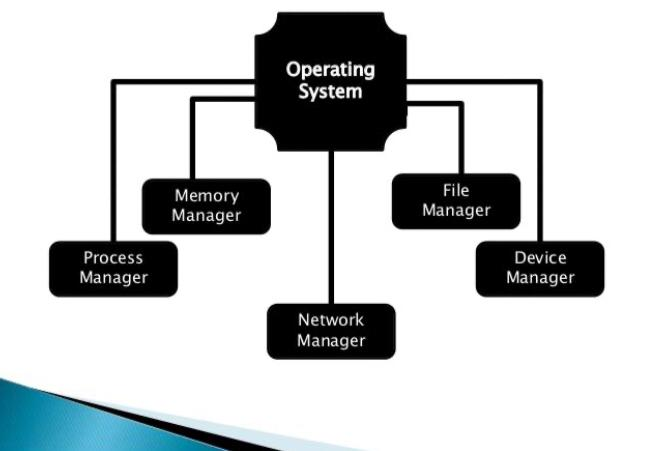
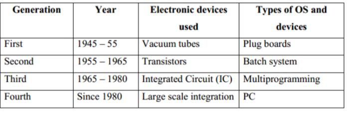

Operating Systems
Links:
Introduction to operating system
An operating system (OS) is a set of programs that control the execution of application programs and act as an intermediary between a user of a computer and the computer hardware. OS is software that manages the computer hardware as well as providing an environment for application programs to run. Examples of OS are: Windows, Windows/NT, OS/2 and MacOS.
Operating system Objectives:
The objectives of OS are:
- (1)To make the computer system convenient and easy to use for the user.
- (2)To use the computer hardware in an efficient way.
- (3)To execute user programs and make solving user problems easier.

Operating System History:
Operating systems have been evolving through the years. Following table shows the history of OS.
